library("nfidd.nowcasting")
library("dplyr")
library("tidyr")
library("ggplot2")
library("tidybayes")
library("purrr")Jointly fitting multiple data streams
Introduction
So far we have estimated the reproduction number from a single observed time series. In reality we often observe an outbreak through several surveillance streams at once: confirmed cases, deaths, and a wastewater signal, each a delayed, scaled view of the same underlying epidemic.
Rather than reach straight for a model that swallows all of these at once, in this session we follow a modelling workflow. We start from the question we are trying to answer, sketch what an ideal model would look like, and then build that model up in parts: fitting each data source on its own, linking two together through a shared latent infection process, and finally exposing what happens when streams disagree. This is the modelling idea behind tools such as epidemia, which jointly models cases and deaths from a shared renewal process (Bhatt et al. 2020).
Slides
Objectives
The aim of this session is to develop a joint model of several surveillance streams the way a modeller actually would: question first, then an ideal model, then building it up one stream at a time, checking what each step buys us and what happens when streams conflict.
NoteSetup
Source file
The source file of this session is located at sessions/multiple-data-streams.qmd.
Libraries used
In this session we will use the nfidd.nowcasting package to access stan models and helper functions, the dplyr and tidyr packages for data wrangling, the ggplot2 library for plotting, the tidybayes package for extracting results of the inference, and the purrr package for functional programming.
Tip
The best way to interact with the material is via the Visual Editor of RStudio.
Initialisation
We set a random seed for reproducibility. Setting this ensures that you should get exactly the same results on your computer as we do. We also set an option that makes cmdstanr show line numbers when printing model code. This is not strictly necessary but will help us talk about the models.
set.seed(123)
options(cmdstanr_print_line_numbers = TRUE)
options(cmdstanr_warn_inits = FALSE)The question we are trying to answer
Before reaching for a model it is worth being explicit about what we want from it. Our research question and target estimands are the same as in earlier sessions: we want to recover the latent infection trajectory and the reproduction number \(R_t\) that drives it, in as timely and as well-anchored a way as possible.
No single data stream gives us a perfect view of those quantities.
- Confirmed cases are timely but depend on testing and reporting, and only a fraction of infections are ever ascertained.
- Deaths are a more stable signal but arrive with a long delay and capture only a small, severity-dependent fraction of infections.
- A wastewater signal does not depend on people seeking care at all, but it measures something more indirect (shed pathogen concentration) on its own scale.
The promise of using them together is that the timely-but-noisy streams sharpen our estimate of the recent trajectory while the stable-but-delayed streams anchor the longer-term level. The question for this session is therefore not just “can we fit several streams?” but “what does each stream add, and what happens when they pull in different directions?”.
What would the ideal model look like?
Fitting several data streams is not a one-off trick: it is one step in a wider, iterative workflow for building, checking and comparing infectious disease models (Abbott et al. 2026). We will let that workflow drive how we develop the model in this session, so it is worth looking at it before we write any code.
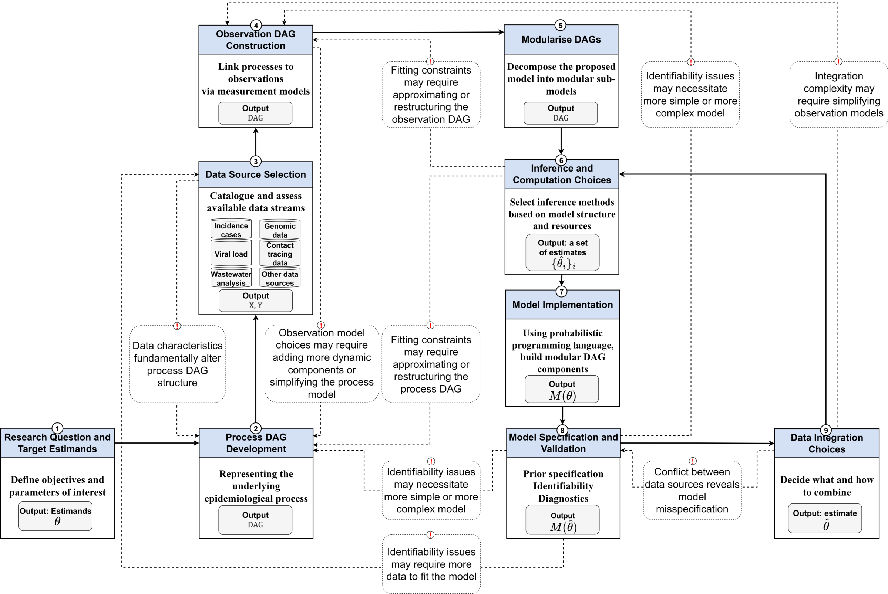
a-workflow-for-infectious-disease-modelling repository (Abbott et al. 2026) under the MIT licence.Reading the diagram from the bottom-left, an ideal model for our question is assembled from a small number of pieces, and the rest of this session walks through them in order:
- Research question and target estimands. We fixed these above: latent infections and \(R_t\).
- Process model. A single shared epidemic process. We reuse the renewal equation with a geometric random walk on \(R_t\) from the previous session, so there is one infection trajectory underneath everything.
- Data source selection. Catalogue the streams available to us (cases, deaths, wastewater) and what each one measures and how it is biased.
- Observation model per source. For each stream, a delay (infection to observation) and a scaling (what fraction of infections, on what scale) and a likelihood. These are separate sub-models, one per data source.
- Data integration choices. How to combine those per-stream observation models. The diagram flags two things about this step: the choice of how to integrate sources, and a feedback arrow warning that conflict between data sources reveals model misspecification.
- Inference, checking and revision. Fit the model, check it against each stream, and let identifiability problems or conflict between sources send us back to revise it.
The ideal model, then, is modular: a shared process model with a separate, swappable observation model for each data source, combined by an explicit integration choice. That modularity is what lets us build it in parts, which is what we do next: fit each observation model on its own, make the integration choice that links them, then stress-test that choice.
NoteParallel (joint) vs sequential modelling
The “data integration choices” box hides a decision about how the streams relate to each other.
In a parallel model – the approach we use in this session – every stream is its own convolution of the shared latent infections, and the streams are conditionally independent given those infections. Schematically:
\[ \text{cases}_t \sim f\big(\text{convolve}(I, p_\text{cases})\big), \qquad \text{deaths}_t \sim g\big(\text{convolve}(I, p_\text{deaths})\big) \]
Both cases and deaths look directly at the same infections \(I\), each through their own delay distribution \(p\). Once we condition on \(I\), knowing the cases tells us nothing extra about the deaths: all the shared information flows through the infections.
In a sequential model, by contrast, one stream is modelled as a convolution of another stream rather than of the infections, for example
\[ \text{deaths}_t \sim g\big(\text{convolve}(\text{cases}, p)\big), \]
chaining deaths off cases instead of off the shared infections.
Which should you choose? The choice hinges on whether the streams are better seen as independent observations of a shared process, or as a genuine causal chain you trust.
- A parallel model is appropriate when each stream is an independent (noisy) window on the same underlying infections, as cases and deaths usually are. It is the right default in that case: the streams jointly inform the infections, borrow strength from one another, and propagate uncertainty coherently, with no single stream privileged.
- A sequential model is appropriate only when one stream genuinely derives from another in a way you trust (for example, if deaths really were generated from the observed cases). It is simpler, but it conditions on a possibly incomplete or biased upstream stream.
These choices have different consequences for the answer. In a sequential model any bias or under-reporting in the upstream stream flows straight into the downstream estimate; because the upstream is treated as known, those errors cannot be corrected and the downstream uncertainty is understated. In a parallel model all streams jointly inform the shared infections with propagated uncertainty, and genuine disagreement is not silently absorbed: it shows up as misfit you can diagnose, which is exactly the conflict we examine later in this session.
We use the parallel formulation throughout, which keeps the infection process as the one shared quantity that every stream informs.
Building the model in parts
We now build the ideal model up piece by piece, following the build order the workflow suggests: fit each stream on its own, then integrate.
To do this without writing (and compiling) a different model for every combination of streams, we use a single Stan model with a switch for each stream. The model extends the random-walk renewal model from the previous session: one shared geometric random walk for \(R_t\) drives one shared infection process, each stream adds its own convolution, scaling, and likelihood term, and integer flags (use_cases, use_deaths, use_ww) decide which streams contribute to the likelihood.
mod <- nfidd_cmdstan_model("estimate-inf-and-r-multi-stream")
modfunctions {
#include "functions/convolve_with_delay.stan"
#include "functions/renewal.stan"
#include "functions/geometric_random_walk.stan"
}
data {
int n; // number of days
int I0; // number initially infected
// shared latent process
int gen_time_max; // maximum generation time
array[gen_time_max] real gen_time_pmf; // pmf of generation time distribution
// per-stream switches: set to 1 to fit a stream, 0 to leave it out.
// This lets the SAME model fit one stream on its own, two streams linked
// together, or all three jointly, so we can build the model up in parts.
int<lower = 0, upper = 1> use_cases;
int<lower = 0, upper = 1> use_deaths;
int<lower = 0, upper = 1> use_ww;
// switch on a time-varying death scaling (a random walk on the IFR) to let
// the model explain a drifting severity rather than forcing a compromise.
int<lower = 0, upper = 1> tv_death_scale;
// stream 1: cases (infection-to-report delay, ascertainment)
array[n] int cases;
int<lower = 1> case_delay_max;
array[case_delay_max + 1] real case_delay_pmf;
// stream 2: deaths (infection-to-death delay, IFR)
array[n] int deaths;
int<lower = 1> death_delay_max;
array[death_delay_max + 1] real death_delay_pmf;
// stream 3: wastewater (infection-to-shedding delay, scaling)
array[n] real ww; // log-scale wastewater concentration
int<lower = 1> ww_delay_max;
array[ww_delay_max + 1] real ww_delay_pmf;
}
parameters {
real<lower = 0> init_R; // initial reproduction number
array[n-1] real rw_noise; // random walk noise
real<lower = 0> rw_sd; // random walk standard deviation
real<lower = 0, upper = 1> ascertainment; // proportion of infections reported
real<lower = 0, upper = 1> ifr; // infection fatality ratio (initial level)
real<lower = 0> ww_scale; // wastewater scaling (signal per infection)
real<lower = 0> ww_sigma; // wastewater obs sd (log scale)
// optional random walk on the (log) death scaling, only used when
// tv_death_scale = 1. Sized to zero otherwise so it costs nothing.
array[tv_death_scale ? n - 1 : 0] real ifr_rw_noise;
array[tv_death_scale ? 1 : 0] real<lower = 0> ifr_rw_sd;
}
transformed parameters {
// one shared infection / Rt process feeds every stream
array[n] real R = geometric_random_walk(init_R, rw_noise, rw_sd);
array[n] real infections = renewal(I0, R, gen_time_pmf);
// death scaling: either constant (ifr) or a geometric random walk starting
// from ifr, which lets a drifting severity be absorbed rather than forced
// into the shared infections.
array[n] real death_scale;
if (tv_death_scale) {
death_scale = geometric_random_walk(ifr, ifr_rw_noise, ifr_rw_sd[1]);
} else {
for (i in 1:n) death_scale[i] = ifr;
}
// each stream is a convolution of the SAME infections with its own delay
array[n] real exp_cases;
array[n] real exp_deaths;
array[n] real exp_ww;
{
array[n] real case_conv = convolve_with_delay(infections, case_delay_pmf);
array[n] real death_conv = convolve_with_delay(infections, death_delay_pmf);
array[n] real ww_conv = convolve_with_delay(infections, ww_delay_pmf);
for (i in 1:n) {
exp_cases[i] = ascertainment * case_conv[i];
exp_deaths[i] = death_scale[i] * death_conv[i];
exp_ww[i] = ww_scale * ww_conv[i];
}
}
}
model {
// priors
init_R ~ normal(1, 0.5) T[0, ];
rw_noise ~ std_normal();
rw_sd ~ normal(0, 0.05) T[0, ];
ascertainment ~ beta(2, 2);
ifr ~ beta(1, 50);
ww_scale ~ normal(1, 1) T[0, ];
ww_sigma ~ normal(0, 0.5) T[0, ];
if (tv_death_scale) {
ifr_rw_noise ~ std_normal();
ifr_rw_sd ~ normal(0, 0.1); // half-normal via <lower = 0> on the parameter
}
// joint likelihood: each stream contributes its own term off infections,
// and only the streams we switch on are added. Because the streams are
// conditionally independent given the infections, the joint log-likelihood
// is simply the sum of the per-stream terms.
if (use_cases) {
cases ~ poisson(exp_cases);
}
if (use_deaths) {
deaths ~ poisson(exp_deaths);
}
if (use_ww) {
ww ~ normal(log(exp_ww), ww_sigma);
}
}
TipTake 5 minutes
Familiarise yourself with the model above. Compare it to the random-walk model estimate-inf-and-r-rw from the previous session. Which parts are shared across all three streams, and which parts are specific to each stream? Where in the model block does each stream contribute to the likelihood, and what do the use_* flags do there?
NoteSolution
The R, infections, generation time, random walk noise and random walk standard deviation are shared: there is a single latent infection process. Each stream has its own delay PMF, its own scaling parameter (ascertainment, ifr, ww_scale) and its own observation term in the model block. The three likelihood lines (cases ~ poisson(...), deaths ~ poisson(...), ww ~ normal(log(...), ww_sigma)) are each guarded by a use_* flag, so we can switch any stream on or off. Because the streams are conditionally independent given the infections, whichever terms are switched on are simply added together to form the joint log-likelihood.
The Stan model always expects data for all three streams; the use_* flags decide which ones actually enter the likelihood. So that we can build up the data the same way we build up the model, we start with a small helper that assembles the data list for whichever streams we have simulated so far, filling any stream we have not yet introduced with harmless placeholders (they never enter the likelihood while its use_* flag is 0).
make_data <- function(cases, deaths, ww,
case_delay_pmf, death_delay_pmf, ww_delay_pmf) {
list(
n = n,
I0 = I0,
gen_time_max = length(gen_time_pmf),
gen_time_pmf = gen_time_pmf,
cases = cases,
case_delay_max = length(case_delay_pmf) - 1,
case_delay_pmf = case_delay_pmf,
deaths = deaths,
death_delay_max = length(death_delay_pmf) - 1,
death_delay_pmf = death_delay_pmf,
ww = ww,
ww_delay_max = length(ww_delay_pmf) - 1,
ww_delay_pmf = ww_delay_pmf,
tv_death_scale = 0
)
}A second helper switches the requested streams on and fits the model. We provide initial values to help the sampler, and expose adapt_delta: the multi-stream joint fits have a more difficult posterior, so for those we raise adapt_delta to 0.95, the same lever used in the joint nowcasting session. The single-stream diagnostic fits are easier, so they use the course-standard default. To keep this session quick to run we fit 2 chains and a shorter warmup (iter_warmup = 250, keeping iter_sampling = 500); the models still converge well at these settings.
fit_streams <- function(data, use_cases, use_deaths, use_ww,
adapt_delta = 0.8, iter_warmup = 250) {
data <- c(data, list(
use_cases = use_cases, use_deaths = use_deaths, use_ww = use_ww
))
nfidd_sample(
mod, data = data,
chains = 2, parallel_chains = 2,
iter_warmup = iter_warmup, iter_sampling = 500,
adapt_delta = adapt_delta,
max_treedepth = 12,
init = \() list(init_R = 1, rw_sd = 0.01)
)
}Part 1: simulate and fit cases and deaths on their own
The first thing the workflow asks of us is an observation model per source. We start with the two count streams. Each is a convolution of the shared infections with its own delay distribution, scaled by a fraction of infections, observed as counts:
- Cases: a short infection-to-report delay, scaled by an ascertainment fraction (most infections are never confirmed).
- Deaths: a long infection-to-death delay, scaled by the infection fatality ratio (IFR).
case_delay_pmf <- censored_delay_pmf(rgamma, max = 10, shape = 3, rate = 1)
death_delay_pmf <- censored_delay_pmf(rgamma, max = 12, shape = 8, rate = 1)
ascertainment <- 0.4
ifr <- 0.1
exp_cases <- ascertainment * convolve_with_delay(infections, case_delay_pmf)
exp_deaths <- ifr * convolve_with_delay(infections, death_delay_pmf)
obs <- inf_df |>
mutate(
cases = rpois(n, exp_cases),
deaths = rpois(n, exp_deaths)
)We can plot the two streams alongside the infections. Each is a delayed, rescaled echo of the same infection curve: deaths peak later than cases.
obs |>
select(day, infections, cases, deaths) |>
pivot_longer(-day, names_to = "stream", values_to = "value") |>
ggplot(aes(x = day, y = value)) +
geom_line() +
facet_wrap(~stream, scales = "free_y") +
labs(title = "Shared infections and the two count streams",
x = "Day", y = NULL)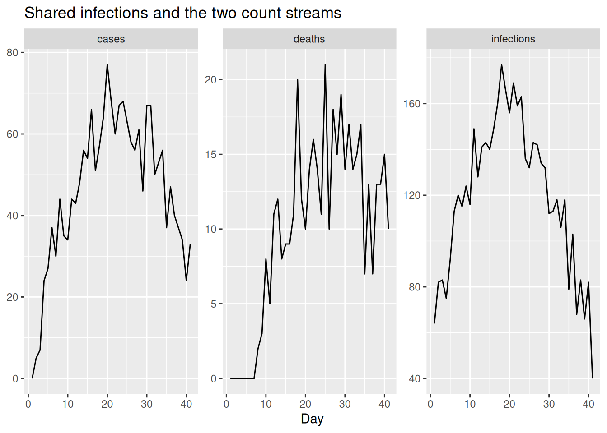
Before combining anything, we check that each stream, on its own, can recover the shared infection process through its own delay and scaling. We assemble the data (using a placeholder wastewater stream for now) and fit the cases stream alone, then the deaths stream alone.
## placeholder wastewater: never enters the likelihood while use_ww = 0
ww_placeholder_pmf <- censored_delay_pmf(rgamma, max = 10, shape = 2, rate = 1)
cd_data <- make_data(
cases = obs$cases, deaths = obs$deaths, ww = rep(0, n),
case_delay_pmf = case_delay_pmf,
death_delay_pmf = death_delay_pmf,
ww_delay_pmf = ww_placeholder_pmf
)
fit_cases <- fit_streams(cd_data, use_cases = 1, use_deaths = 0, use_ww = 0)
fit_deaths <- fit_streams(cd_data, use_cases = 0, use_deaths = 1, use_ww = 0)We extract the estimated infections from each single-stream fit and compare them to the truth.
single_inf <- bind_rows(
fit_cases |> gather_draws(infections[day]) |> mutate(model = "cases only"),
fit_deaths |> gather_draws(infections[day]) |> mutate(model = "deaths only")
) |>
ungroup() |>
group_by(model) |>
filter(.draw %in% sample(.draw, 100)) |>
ungroup()
ggplot(single_inf, aes(x = day)) +
geom_line(aes(y = .value, group = .draw), alpha = 0.1) +
geom_line(data = inf_df, aes(y = infections), colour = "red") +
facet_wrap(~model) +
labs(title = "Infections from single-stream fits (grey) vs truth (red)",
x = "Day", y = "Infections")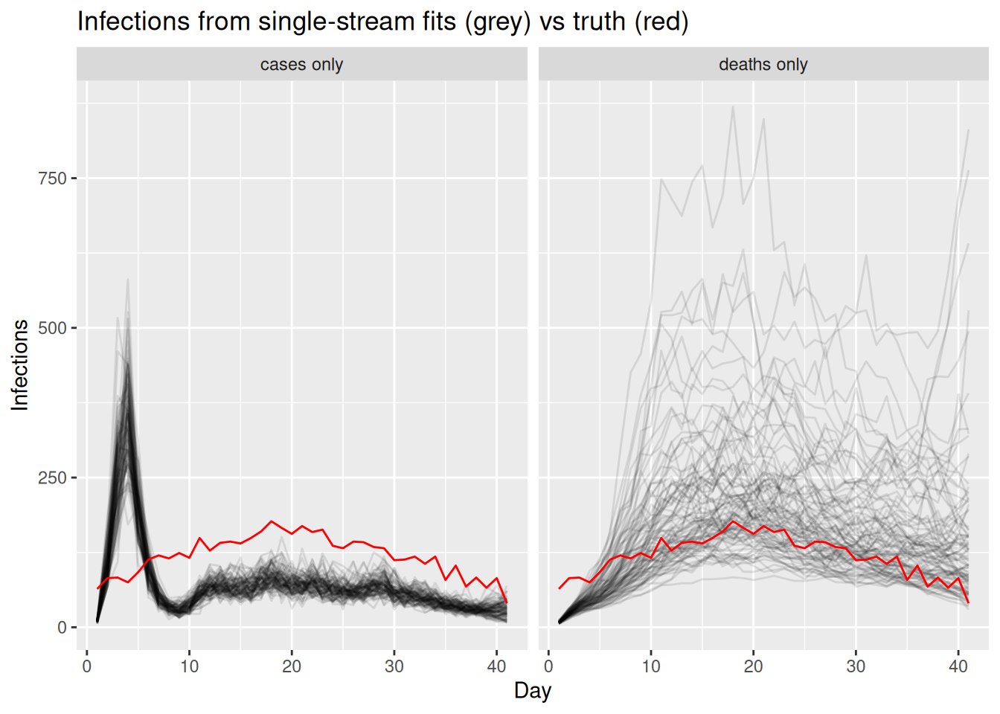
TipTake 2 minutes
Compare the two single-stream fits. Which stream pins down the recent part of the infection curve (the right-hand end) more tightly, and why? What does the long infection-to-death delay do to the deaths-only fit near the present?
NoteSolution
The cases-only fit constrains the recent infections relatively well, because the infection-to-report delay is short, so recent infections still feed into observed cases. The deaths-only fit is much more uncertain near the present: with a long infection-to-death delay, recent infections have barely begun to show up in deaths, so the most recent infections are informed almost entirely by the prior. Each stream is a valid but partial view of the same infections, which is why combining them is attractive.
Part 3: introduce wastewater and fit it on its own
So far both streams have been counts of people. We now introduce a third, very different stream: wastewater.
Wastewater surveillance measures the concentration of pathogen genetic material (e.g. viral RNA) shed into the sewage system. Because it samples whatever is in the sewer, it is a population-level signal that does not depend on people seeking testing or care, and it picks up infections regardless of whether they are ever ascertained as cases. That makes it an attractive complement to the count streams: it can lead case reports, captures asymptomatic infection, and is relatively cheap to collect at the scale of a whole catchment.
We model it in a deliberately simple way that mirrors the other streams: the signal is taken to be proportional to recent infections, via a short infection-to-shedding delay and a single scaling factor, and observed on the log scale with log-normal noise (a single site, with no normalisation or site effects).
ww_delay_pmf <- censored_delay_pmf(rgamma, max = 10, shape = 2, rate = 1)
ww_scale <- 2
exp_ww <- ww_scale * convolve_with_delay(infections, ww_delay_pmf)
obs <- obs |>
mutate(ww = rnorm(n, log(exp_ww), 0.2))
NoteTake 2 minutes
The wastewater stream is modelled on the log scale with log-normal noise, whereas cases and deaths are counts with a Poisson model. Why might a log-normal observation model be a more natural choice for a continuous concentration measurement than a count distribution?
NoteSolution
A wastewater concentration is a positive, continuous measurement rather than a count of discrete events, so a count distribution does not apply directly. Measurement error in such assays tends to be multiplicative (proportional to the signal) rather than additive, which a log-normal observation model captures well. Dedicated wastewater tools build a much richer shedding and measurement model than ours; see EpiSewer (Lison et al. 2025; Lison 2025) and the CDC ww-inference-model (Johnson et al. 2026) to go further.
As with the other streams, we first fit wastewater on its own to check it can recover the shared infections through its delay and scaling. We rebuild the data, now with the real wastewater stream.
full_data <- make_data(
cases = obs$cases, deaths = obs$deaths, ww = obs$ww,
case_delay_pmf = case_delay_pmf,
death_delay_pmf = death_delay_pmf,
ww_delay_pmf = ww_delay_pmf
)
fit_ww <- fit_streams(full_data, use_cases = 0, use_deaths = 0, use_ww = 1)ww_inf <- fit_ww |>
gather_draws(infections[day]) |>
ungroup() |>
filter(.draw %in% sample(.draw, 100))
ggplot(ww_inf, aes(x = day)) +
geom_line(aes(y = .value, group = .draw), alpha = 0.1) +
geom_line(data = inf_df, aes(y = infections), colour = "red") +
labs(title = "Infections, wastewater only (grey) vs truth (red)",
subtitle = "A short-delay stream on its own scale")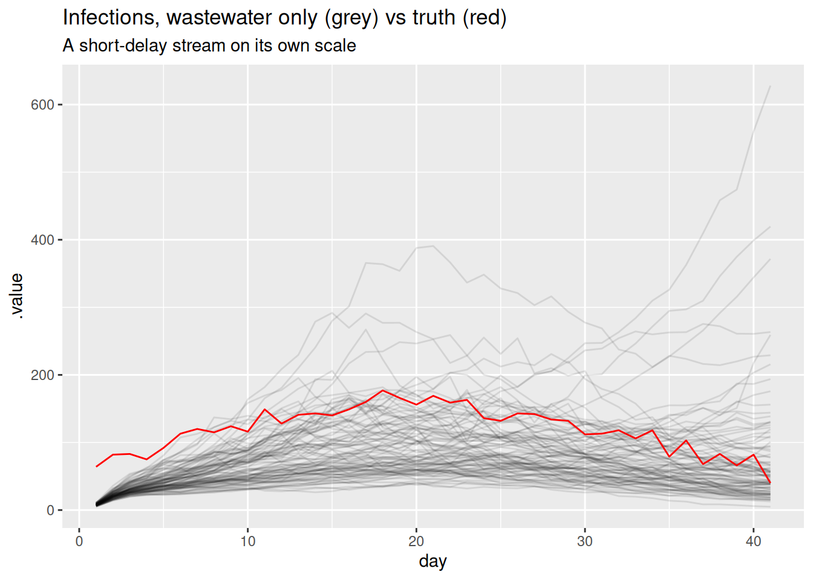
Part 4: add wastewater to the stack
Adding a stream is now just another integration step: switch wastewater on alongside cases and deaths.
fit <- fit_streams(
full_data, use_cases = 1, use_deaths = 1, use_ww = 1, adapt_delta = 0.95
)fitWarning: The ESS has been capped to avoid unstable estimates. variable mean median sd mad q5 q95 rhat ess_bulk ess_tail
lp__ 5931.27 5931.57 5.13 5.22 5922.63 5939.13 1.00 331 464
init_R 2.54 2.54 0.34 0.32 1.99 3.10 1.00 1588 742
rw_noise[1] 2.38 2.39 0.84 0.81 0.93 3.80 1.00 1336 824
rw_noise[2] 0.51 0.52 0.88 0.87 -0.91 2.02 1.00 2535 726
rw_noise[3] -0.64 -0.66 0.92 0.91 -2.15 0.87 1.00 3000 850
rw_noise[4] -2.22 -2.20 0.93 0.92 -3.76 -0.78 1.01 2727 540
rw_noise[5] -2.45 -2.47 0.86 0.88 -3.84 -1.01 1.00 2675 777
rw_noise[6] -2.37 -2.35 0.83 0.88 -3.66 -0.99 1.00 2037 719
rw_noise[7] -1.40 -1.40 0.86 0.91 -2.79 -0.02 1.00 1661 807
rw_noise[8] -0.54 -0.52 0.79 0.78 -1.81 0.77 1.00 1824 852
# showing 10 of 293 rows (change via 'max_rows' argument or 'cmdstanr_max_rows' option)We extract the posterior for the shared infections and reproduction number from the full three-stream fit.
posteriors <- fit |>
gather_draws(infections[day], R[day]) |>
ungroup() |>
filter(.draw %in% sample(.draw, 100))The infections are now informed by all three streams at once:
inf_posterior <- posteriors |>
filter(.variable == "infections")
ggplot(inf_posterior, aes(x = day)) +
geom_line(aes(y = .value, group = .draw), alpha = 0.1) +
geom_line(data = inf_df, aes(y = infections), colour = "red") +
labs(title = "Infections, estimated (grey) and true (red)",
subtitle = "Joint model fit to cases, deaths and wastewater")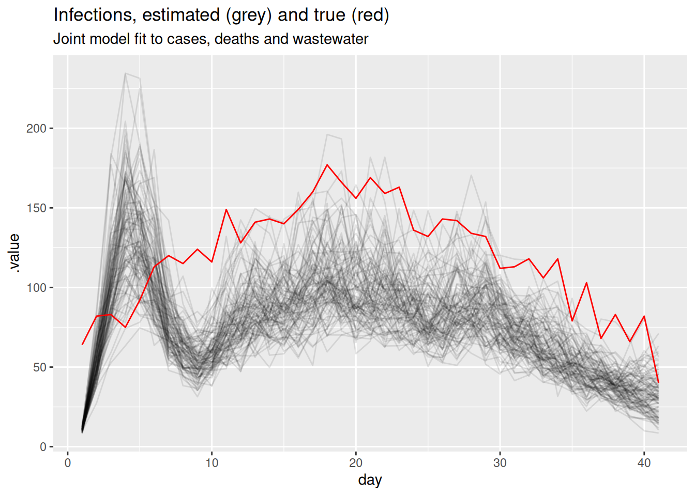
and so is the reproduction number:
r_posterior <- posteriors |>
filter(.variable == "R")
ggplot(r_posterior, aes(x = day, y = .value, group = .draw)) +
geom_line(alpha = 0.1) +
geom_hline(yintercept = 1, linetype = "dashed") +
labs(title = "Estimated Rt",
subtitle = "Joint model fit to all three streams")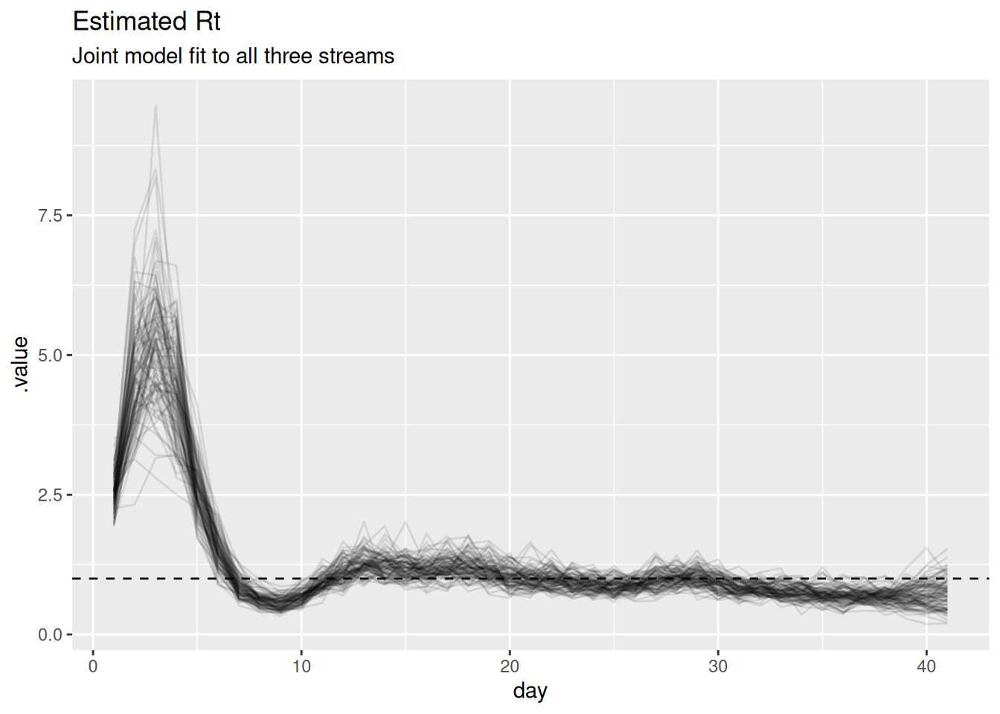
TipTake 2 minutes
Look at the scaling parameters (ascertainment, ifr, ww_scale) in the model summary above. Are they recovered as precisely as \(R_t\)? Why might the absolute level of infections be harder to pin down than the trajectory of \(R_t\)?
NoteSolution
The scaling parameters are recovered much less precisely than \(R_t\). Cases and deaths only constrain the product of infections and their scaling, so multiplying infections by a constant and dividing the scalings by the same constant gives an almost identical fit. The shape of the trajectory – and hence \(R_t\) – is well identified by all three streams, but the absolute level is only weakly identified. In the workflow this is the “identifiability” feedback arrow: a problem we can either live with or address by fixing or strongly informing one of these scalings (for example, a literature value for the IFR) to anchor the level.
When streams conflict
Combining streams works well when they tell a consistent story, but real surveillance streams can disagree. This is the feedback arrow in the workflow that we singled out earlier: conflict between data sources reveals model misspecification.
What does it mean for streams to conflict?
Because every stream is a delayed, scaled view of the same latent infections, each implicitly carries its own answer to the question “what must the infection trajectory have looked like?”. Two streams conflict when those implied trajectories are incompatible: the cases imply infections that are falling while the deaths imply infections that are still rising, say, and no single \(R_t\) path can produce both at once.
Why does this happen in practice? The model assumes each stream is the shared infections convolved with a fixed delay and multiplied by a constant scaling. Conflict is what we see when one of those assumptions is wrong for at least one stream, for example:
- Changing ascertainment. A change in testing policy or test availability bends the case curve without any change in transmission, so the constant-ascertainment assumption breaks.
- Mis-specified delays. If the true infection-to-death delay is longer or more dispersed than the PMF we supplied, deaths will appear shifted relative to the infections the other streams imply.
- Mis-specified scalings. A drifting infection fatality ratio (e.g. with changing age structure or treatment) or a reporting artefact pushes a stream off the level the others support.
- Genuinely different populations. Streams that sample different groups (e.g. hospital deaths vs community cases) need not share one infection process at all.
To see conflict in action we give it a concrete mechanism: a drifting infection fatality ratio. We re-simulate the deaths from the same shared infections as before, but let the death scaling rise over the second half of the outbreak (as it might if severity increased with age structure or a new variant). Cases and wastewater are unchanged. Under our constant-scaling model the rising deaths therefore look like a rising epidemic, which the flat-scaling cases and wastewater flatly contradict.
## death scaling drifts up over the second half of the outbreak
ifr_drift <- ifr * c(rep(1, 20), seq(1, 4, length.out = n - 20))
exp_deaths_conflict <- ifr_drift * convolve_with_delay(infections, death_delay_pmf)
obs_conflict <- obs |>
mutate(deaths = rpois(n, exp_deaths_conflict))Fitting the constant-scaling model to conflicting streams
We refit the same joint, three-stream model – still assuming a constant death scaling – to this conflicting data, reusing the helpers and just swapping in the conflicting deaths.
data_conflict <- full_data
data_conflict$deaths <- obs_conflict$deaths
fit_conflict <- fit_streams(
data_conflict, use_cases = 1, use_deaths = 1, use_ww = 1, adapt_delta = 0.95
)We compare the \(R_t\) estimates from the consistent and conflicting fits.
r_consistent <- fit |>
gather_draws(R[day]) |>
ungroup() |>
filter(.draw %in% sample(.draw, 100)) |>
mutate(data = "consistent")
r_conflict <- fit_conflict |>
gather_draws(R[day]) |>
ungroup() |>
filter(.draw %in% sample(.draw, 100)) |>
mutate(data = "conflicting deaths")
ggplot(
rbind(r_consistent, r_conflict),
aes(x = day, y = .value, group = .draw, colour = data)
) +
geom_line(alpha = 0.1) +
geom_hline(yintercept = 1, linetype = "dashed") +
scale_colour_brewer(palette = "Set1") +
guides(colour = guide_legend(override.aes = list(alpha = 1))) +
labs(title = "Rt under consistent vs conflicting streams") +
theme(legend.position = "bottom")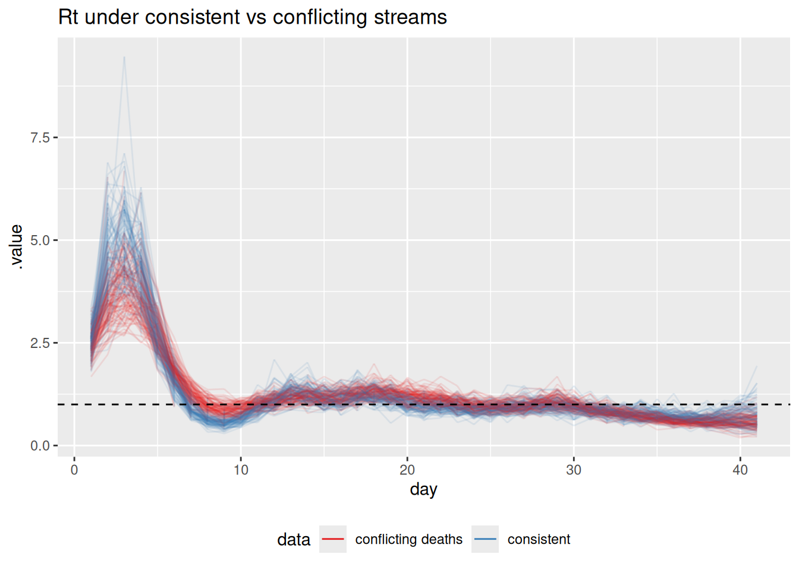
TipTake 2 minutes
How does the \(R_t\) estimate change when the deaths stream conflicts with the others? Is the result closer to the “true” declining \(R_t\), the rising signal implied by deaths, or somewhere in between?
NoteSolution
The conflicting-deaths fit pulls \(R_t\) in the second half of the outbreak upwards, away from the true declining trajectory, towards a compromise between the declining cases/wastewater and the rising deaths. A single shared infection process cannot simultaneously be declining (to match cases and wastewater) and rising (to match deaths), so the model splits the difference. The joint estimate is no longer faithful to any single stream.
How the joint model surfaces conflict
The \(R_t\) comparison above already hints at trouble, but in a real analysis we would not know the truth to compare against. So how would conflict actually announce itself? It shows up in three linked ways, and a principled workflow looks for all of them.
1. Poor fit to one stream. The clearest symptom is a posterior predictive check: simulate each stream from the fitted model and overlay it on the data. Because the shared infections are dragged towards a compromise, at least one stream ends up fitted badly. We can extract the expected counts the model implies for each stream (exp_cases, exp_deaths) and compare them to the conflicting data.
exp_draws <- fit_conflict |>
gather_draws(exp_cases[day], exp_deaths[day]) |>
group_by(.variable, day) |>
median_qi(.value, .width = 0.9)
obs_long <- obs_conflict |>
select(day, cases, deaths) |>
pivot_longer(-day, names_to = "stream", values_to = "value") |>
mutate(.variable = paste0("exp_", stream))
ggplot(exp_draws, aes(x = day)) +
geom_ribbon(aes(ymin = .lower, ymax = .upper), alpha = 0.3) +
geom_line(aes(y = .value)) +
geom_point(data = obs_long, aes(y = value), size = 0.6) +
facet_wrap(~.variable, scales = "free_y") +
labs(title = "Posterior predictive fit under conflicting streams",
subtitle = "Fitted expectation (line + 90% band) vs observed (points)",
x = "Day", y = NULL)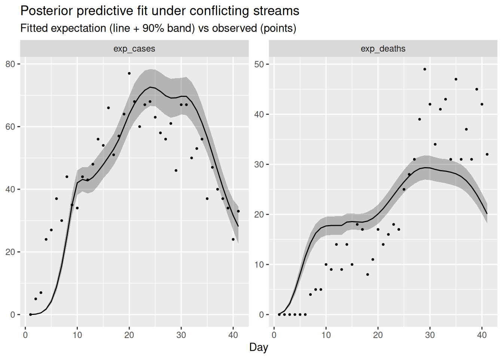
The compromise infection trajectory cannot match both streams: typically the fitted expectation systematically under-shoots the late, rising deaths while over-shooting the declining cases (or vice versa), with the data points drifting outside the predictive band on one or both panels. A consistent run of points on one side of the fitted line for a single stream is the tell-tale sign that that stream is fighting the others.
2. Tension in the shared latent infections. Conflict does not stay neatly inside one stream. Because all streams pull on the same infections, an irreconcilable stream distorts the shared trajectory itself – and hence \(R_t\), as we saw – and inflates its uncertainty as the sampler is pulled between two incompatible explanations. A latent quantity that suddenly becomes much more uncertain, or that no longer matches any stream when you propagate it back through the observation models, is a second symptom of conflict.
3. Degraded sampling. When the geometry of the posterior is contorted by trying to satisfy contradictory data, the sampler struggles. In practice this surfaces as divergent transitions, low effective sample sizes, or high rhat in the fit summary. It is always worth scanning the diagnostics of the conflicting fit (fit_conflict) and comparing them to the clean fit: sampler complaints are not just a computational nuisance, they can be a signature of a misspecified model.
TipTake 5 minutes
Look at the posterior predictive plot and at the diagnostics of fit_conflict (the rhat and ess_bulk columns in fit_conflict, and any divergence warnings). Which stream is fitted worst, and in which direction does the model miss? Do the sampler diagnostics look worse than for the consistent fit?
NoteSolution
The deaths panel is fitted worst: the rising deaths in the second half of the outbreak sit above the fitted expectation, because the model has been pulled down towards the declining cases and wastewater. Symmetrically, the late cases tend to sit slightly below their fitted line, because the deaths have tugged the shared infections up. Neither stream is fitted as cleanly as in the consistent case, which is the data-space signature of the \(R_t\) compromise. The diagnostics for the conflicting fit are usually a little worse (larger rhat, smaller ess_bulk, occasional divergences) because the posterior is harder to explore when the data cannot be reconciled.
What should a modeller do about conflict?
It is worth being clear about what the shared latent process does and does not do here. Sharing one infection process across streams surfaces a conflict (the symptoms above) and yields a single compromise estimate, but it does not resolve the disagreement: the compromise is faithful to no stream and, as we have seen, can be actively misleading about \(R_t\). Genuine resolution comes from modelling the reason the streams disagree, not from averaging the streams together.
NoteOptions for resolving conflict
When a principled model check flags conflict between data sources, there are a handful of standard responses (Presanis et al. 2013; De Angelis and Presanis 2018; Gelman et al. 2020):
- Model the differing mechanism. Extend the model so the suspected source of divergence is explicit – a time-varying ascertainment or IFR, a re-estimated or more dispersed delay, or stream-specific reporting effects. This is the principled default when the streams really do observe the same infections (De Angelis and Presanis 2018; Nicholson et al. 2022).
- Expand or relax the observation model. Allow overdispersion, or weaken an over-confident likelihood, so a stream is no longer forced onto a level it cannot support.
- Down-weight or drop a stream. If a stream measures a genuinely different population, or carries an artefact you cannot model, it may be right to exclude it – but only once you understand why (Presanis et al. 2013).
- Revisit the data. Conflict is sometimes a data problem (a definition change, a reporting glitch) rather than a model problem, and is best fixed upstream.
Conflict diagnostics in Bayesian evidence synthesis make this formal: they quantify how much each source disagrees with the rest before deciding what to do (Presanis et al. 2013).
We will do the first of these: model the mechanism behind the divergence. We suspected a drifting death scaling, so we relax the constant-IFR assumption and let the death scaling follow its own random walk over time. The model already has a switch for this, tv_death_scale; setting it to 1 turns the scalar ifr into a geometric random walk.
data_resolved <- data_conflict
data_resolved$tv_death_scale <- 1
fit_resolved <- fit_streams(
data_resolved, use_cases = 1, use_deaths = 1, use_ww = 1
)First, does it now fit the deaths? We repeat the posterior predictive check, comparing the constant-scaling and time-varying-scaling fits.
ppc_for <- function(fit, label) {
fit |>
gather_draws(exp_cases[day], exp_deaths[day]) |>
group_by(.variable, day) |>
median_qi(.value, .width = 0.9) |>
mutate(model = label)
}
resolved_draws <- bind_rows(
ppc_for(fit_conflict, "constant scaling"),
ppc_for(fit_resolved, "time-varying death scaling")
)
ggplot(resolved_draws, aes(x = day)) +
geom_ribbon(aes(ymin = .lower, ymax = .upper), alpha = 0.3) +
geom_line(aes(y = .value)) +
geom_point(data = obs_long, aes(y = value), size = 0.6) +
facet_grid(.variable ~ model, scales = "free_y") +
labs(title = "Posterior predictive fit: before and after modelling the drift",
subtitle = "Fitted expectation (line + 90% band) vs observed (points)",
x = "Day", y = NULL)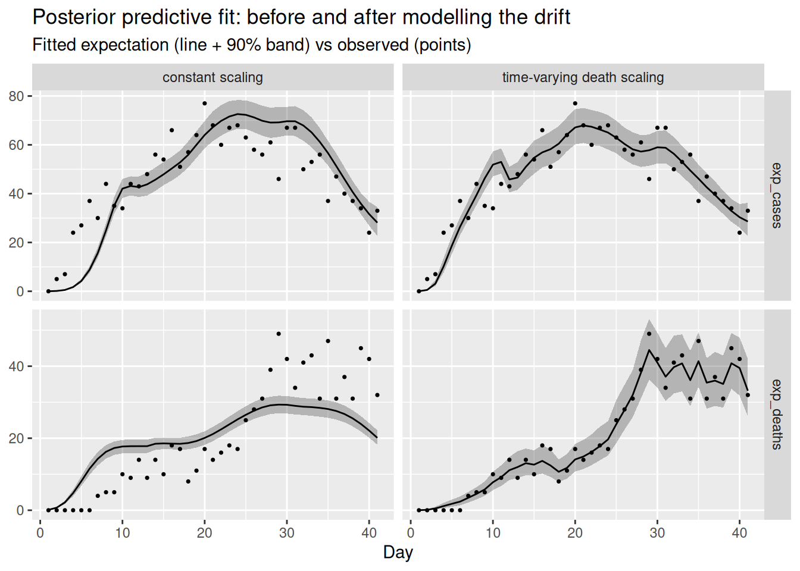
Letting the death scaling drift lets the deaths panel track the rising data without dragging the shared infections up, so both streams are fitted well at once. We can confirm that \(R_t\) no longer chases the deaths, by comparing it to the true declining trajectory the cases and wastewater came from.
r_resolved <- bind_rows(
fit_conflict |> gather_draws(R[day]) |> mutate(model = "constant scaling"),
fit_resolved |> gather_draws(R[day]) |> mutate(model = "time-varying death scaling")
) |>
ungroup() |>
group_by(model) |>
filter(.draw %in% sample(.draw, 100)) |>
ungroup()
ggplot(r_resolved, aes(x = day, y = .value, group = .draw)) +
geom_line(alpha = 0.1) +
geom_hline(yintercept = 1, linetype = "dashed") +
facet_wrap(~model) +
labs(title = "Rt before and after modelling the drifting death scaling")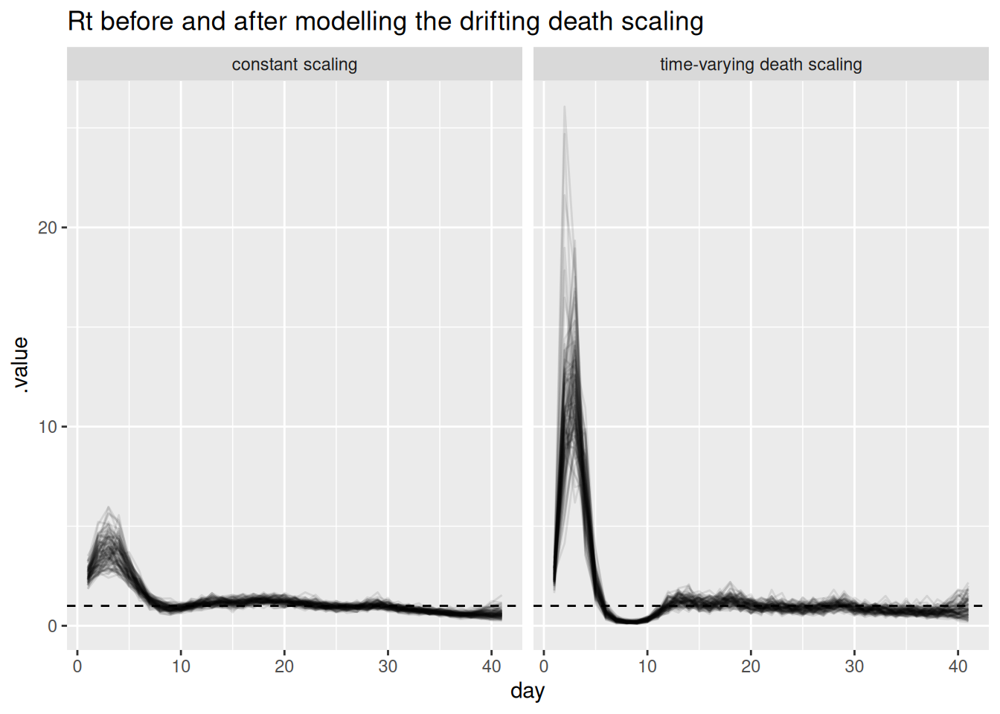
fit_resolved |>
gather_draws(death_scale[day]) |>
median_qi(.value, .width = 0.9) |>
ggplot(aes(x = day, y = .value)) +
geom_ribbon(aes(ymin = .lower, ymax = .upper), alpha = 0.3) +
geom_line() +
geom_line(
data = tibble(day = seq_len(n), .value = ifr_drift),
colour = "red"
) +
labs(title = "Recovered death scaling (black) vs truth (red)",
x = "Day", y = "Death scaling")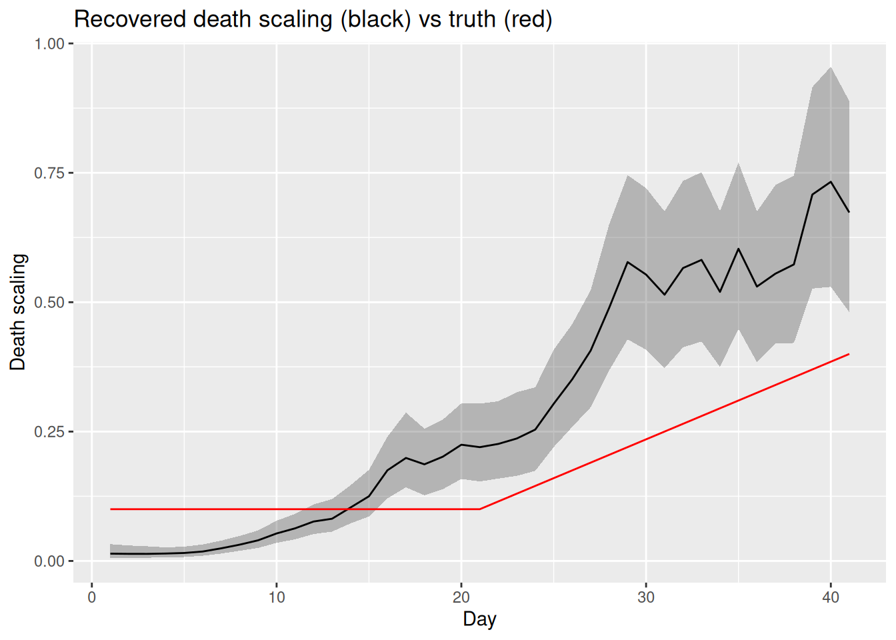
TipTake 5 minutes
Compare the two fits. Does the time-varying-scaling model fit both the cases and the deaths? Has \(R_t\) returned to the true declining trajectory, and are the sampler diagnostics of fit_resolved better than fit_conflict? Does the recovered death scaling track the drift we built in?
NoteSolution
Modelling the mechanism reconciles the streams. With a time-varying death scaling the deaths panel is fitted well and the cases panel is no longer distorted, because the rising deaths are now explained by a rising scaling rather than by rising infections. \(R_t\) returns to the true declining trajectory, the recovered death scaling tracks the drift we built in, and the sampler diagnostics improve (smaller rhat, larger ess_bulk, fewer or no divergences) because the posterior no longer has to satisfy contradictory data. The lesson: you resolve genuine data conflict by modelling the reason for the divergence, not by hoping the shared latent process will absorb it.
This loop of building in parts, checking each addition, and letting conflict and identifiability send us back to revise is the core of a principled modelling workflow (Abbott et al. 2026).
Going further
Scope
This session extended the renewal-with-delays model to multiple parallel streams. We kept it to renewal plus convolutions and did not bring in nowcasting or the reporting triangle: each stream here is assumed fully observed up to the present. Combining this multi-stream approach with the nowcasting models from the joint nowcasting session is a natural next step.
Challenge
- We used a Poisson observation model for both cases and deaths. Reporting is often overdispersed. How would you change the model to use a negative binomial distribution instead, and what extra parameter would that introduce?
- We resolved the conflict by letting the death scaling drift. Following the same pattern as
tv_death_scale, how would you add a time-varying ascertainment to absorb a conflict driven by a change in testing policy? Which stream conflicts would that be able to absorb, and which would it not? - We added the streams one at a time up to the full fit. Use the
use_*flags to instead drop one stream at a time from the full fit. How much does each stream contribute to the precision of the \(R_t\) estimate near the end of the outbreak?
Methods in practice
epidemiaimplements joint renewal-equation models of cases and deaths of the kind introduced here (Bhatt et al. 2020).EpiSeweris a Bayesian generative model for estimating transmission dynamics from a wastewater signal, with a carefully specified shedding and measurement model (Lison et al. 2025; Lison 2025).- The CDC’s wastewater-informed modelling work jointly fits wastewater concentration data and epidemiological count data to produce nowcasts and forecasts (Johnson et al. 2026). Unlike our deliberately single-site example, it combines multiple wastewater sites with hierarchical structure – a multi-site, multi-resolution extension of the ideas in this session.
Wrap up
- Review what you’ve learned in this session with the learning objectives
- Share your questions and thoughts
References
Abbott, Sam et al. 2026. A Workflow for Infectious Disease Modelling. Manuscript and code repository. https://github.com/seabbs/a-workflow-for-infectious-disease-modelling.
Bhatt, Samir, Neil Ferguson, Seth Flaxman, Axel Gandy, Swapnil Mishra, and James A. Scott. 2020. Semi-Mechanistic Bayesian Modeling of COVID-19 with Renewal Processes. arXiv:2012.00394. arXiv. https://doi.org/10.48550/arXiv.2012.00394.
De Angelis, Daniela, and Anne M. Presanis. 2018. “Analysing Multiple Epidemic Data Sources.” arXiv Preprint arXiv:1808.04312. https://arxiv.org/abs/1808.04312.
Gelman, Andrew, Aki Vehtari, Daniel Simpson, et al. 2020. “Bayesian Workflow.” arXiv Preprint arXiv:2011.01808. https://arxiv.org/abs/2011.01808.
Johnson, Kaitlyn, Dylan Morris, Sam Abbott, et al. 2026. ww-inference-model: Jointly Infer Infection Dynamics from Wastewater Data and Epidemiological Indicators. Centers for Disease Control and Prevention, Center for Forecasting and Outbreak Analytics. https://github.com/CDCgov/ww-inference-model.
Lison, Adrian. 2025. EpiSewer: Estimate Epidemiological Parameters from Wastewater Measurements. https://github.com/adrian-lison/EpiSewer.
Lison, Adrian, Rachel McLeod, Jana S. Huisman, et al. 2025. “Robust Real-Time Estimation of Pathogen Transmission Dynamics from Wastewater.” medRxiv, ahead of print, October. https://doi.org/10.1101/2025.10.23.25338640.
Nicholson, George, Marta Blangiardo, Sylvia Richardson, and Chris Holmes. 2022. “Interoperability of Statistical Models in Pandemic Preparedness: Principles and Reality.” Statistical Science 37 (2): 183–206. https://doi.org/10.1214/22-STS854.
Presanis, Anne M., David Ohlssen, David J. Spiegelhalter, and Daniela De Angelis. 2013. “Conflict Diagnostics in Directed Acyclic Graphs, with Applications in Bayesian Evidence Synthesis.” Statistical Science 28 (3): 376–97. https://doi.org/10.1214/13-STS426.